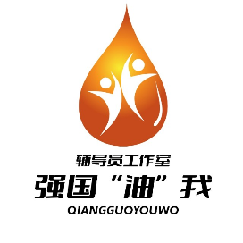

平台介绍
强国“油”我辅导员工作室由石油与天然气工程学院牵头建设，以党建引领、立德树人为主线，把党员教育从「完成规定动作」做成「学生愿意主动参与的事」。
工作室不做单点活动，而是把课程、实践、传播、评价串成一条线，让经验沉淀为可复用的工作模式。

强国“油”我辅导员工作室01荣誉与认可
第八届全国大学生网络文化节作品总量
31 个省（区、市）及新疆生产建设兵团报送；工作室 4 项入选，其中推广作品 2 项为全校唯二。
第八届入选
推广 2 项 · 展播 2 项
第七届入选
含全校唯一入选微课
发展刻度
02关于工作室
平台介绍
强国“油”我辅导员工作室由石油与天然气工程学院牵头建设，以党建引领、立德树人为主线，把党员教育从「完成规定动作」做成「学生愿意主动参与的事」。
工作室不做单点活动，而是把课程、实践、传播、评价串成一条线，让经验沉淀为可复用的工作模式。
工作体系
依托学院院训
三条聚焦
理念与方法
03内容矩阵
Pioneer Program
Pioneer Models
Stories of Light
05团队
联系 qgyw-swpu@163.com（工作室转达）
尾声关注我们
已获牌匾